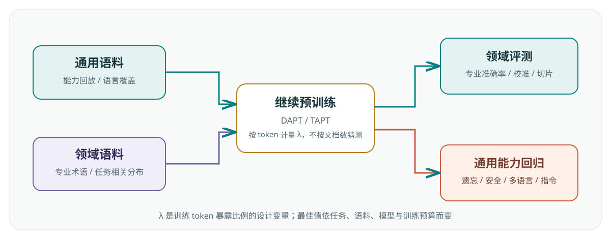
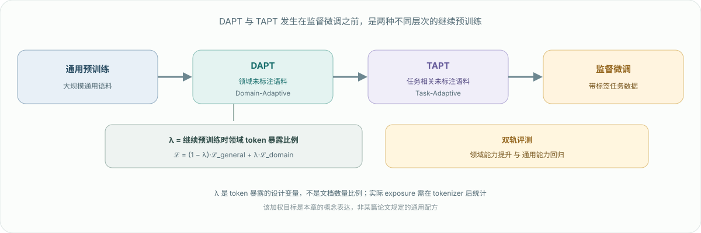

MODULE 22 / LLM DATA ENGINEERING
领域适配数据策略
领域适配不是把某一领域的语料比例调到最大，而是在专业能力、通用能力、数据许可与评测风险之间建立可测量的平衡。
通用模型已经学到大量语言和世界知识，为什么还需要领域语料？医学、法律、代码、科学和企业内部知识有独特术语、文体、事实更新和任务分布。关键不是“堆更多专业文本”，而是定义目标领域、挑选可靠来源、控制训练暴露并监控通用能力回归。
DAPT 与 TAPT：继续预训练的两个层次
Domain-Adaptive Pretraining（DAPT）是在通用预训练模型之后，用目标领域的未标注文本继续进行语言模型预训练；Task-Adaptive Pretraining（TAPT）则进一步使用目标任务相关的未标注语料。它们发生在监督微调之前，不能与有标签的 task fine-tuning 混为一谈。

Gururangan 等人的 ACL 2020 研究覆盖生物医学、计算机科学论文、新闻和评论四个领域、八个分类任务，报告 DAPT 在高资源和低资源设置下均能带来性能收益；在 DAPT 后再做 TAPT 也能继续改善目标任务。该结论来自论文指定的模型、数据与分类任务，不意味着任何领域语料都能自动提升任何模型。
这项研究给出的工程启示是：先判断瓶颈是否真的来自领域语言分布，再决定继续预训练是否值得；如果目标任务只有少量未标注样本，任务相关数据选择也可能是成本更低的替代方案。
不同领域需要不同的数据契约
代码不是普通网页文本
记录仓库、commit、文件路径、语言、许可证和依赖上下文；过滤凭据与密钥；用解析、编译、单元测试和静态分析做多层验证。AST 相似度可以辅助发现结构近似代码，但不能单独判断两个实现语义等价。
Code Llama 研究 ↗术语准确与隐私优先
保留论文版本、期刊/数据库标识、发布日期、证据层级和引用上下文；对病例、患者叙述和临床记录做隐私审查；不能把模型生成的医学解释当作事实标签。
方法、数据与结论要连在一起
保存实验条件、单位、变量定义、数据集版本、代码和表格定位；抽取公式时保留上下文。不同领域的同名指标可能有不同计算口径。
按语言切片评估
监控语言识别误差、低资源语言覆盖、tokenizer 的 token cost、翻译噪声和代码切换；不能用英语上的质量阈值直接替代多语言校准。
通用与领域语料如何混合？
用一个简单目标函数表达继续预训练时的混合思想。这里 是训练 token 暴露比例的设计变量，不是文档数量的简单比例。

这个式子是概念化的目标，不是某篇论文规定的通用配方。实际训练中还要说明数据采样、重复曝光、序列打包、截断、损失掩码和不同数据源的 tokenization。按文档数各取一半，不保证最终训练 token 也各占一半。
可以从小规模对照实验开始：固定模型、tokenizer、总 token budget、训练步数和优化器，比较不同的领域暴露比例或阶段式日程；同时在领域验证集和通用回归集上评估。若领域收益只来自重复记忆或评测污染，必须在数据去重和独立测试上暴露出来。
如何监控灾难性遗忘
继续预训练可能改变模型原有能力。不要只报告领域 benchmark 的单一平均分，应至少维护两组评测：
- 领域能力：专业术语、事实检索、推理、格式遵循、领域任务和校准。
- 通用能力：常识、通用指令、基础推理、多语言、拒答、安全和输出风格。
还应按来源、时间、语言、专业子领域和难度做切片。若领域能力提高但通用能力下降，优先检查混合比例、训练日程、数据重复和领域语料偏差；不要直接把“继续训练更多步”当作修复方法。
领域语料构建的八步流程
- 写清目标任务和目标用户，区分预训练、继续预训练、SFT 与偏好数据。
- 建立来源清单：来源所有者、版本、许可、更新时间、获取方式和使用限制。
- 定义领域质量 rubric：专业准确、完整、时效、引用、格式、隐私和安全。
- 采集后保留原始快照与内容 hash，不要只保留清洗后的文本。
- 做领域专属抽取、语言识别、PII/秘密检测和重复处理。
- 用专家抽样验证规则误杀与漏检，报告各切片保留率。
- 设计 token 级混合与训练日程，记录实际 token exposure。
- 使用领域与通用双轨评测，版本化数据、模型、配置和结果。
交互计算器：给定 token budget，领域与通用数据各占多少？
此计算器把配置的 token share 转成理论 token 数。它不代表实际有效训练 token；生产中需要从 tokenizer、packing 与 sampler 日志重新统计。
# scripts/domain_mix.py
from scripts.domain_mix import token_exposure
plan = token_exposure(total_tokens=100_000_000_000, domain_share=0.30)
print(plan) # domain=30B, general=70B参考资料
- Gururangan et al. Don’t Stop Pretraining: Adapt Language Models to Domains and Tasks, ACL 2020.
- Rozière et al. Code Llama: Open Foundation Models for Code, Meta AI, 2023.